Inhalt Index DeskTop Bronstein

 Computeralgebrasysteme Anwendungen von Computeralgebrasystemen Elemente der linearen Algebra
Computeralgebrasysteme Anwendungen von Computeralgebrasystemen Elemente der linearen Algebra


Die Maple-Bibliothek verfügt über die Spezialpakete linalg und LinearAlgebra, bezüglich der Unterschiede zwischen beiden Paketen muß auf die Dokumentation von Maple verwiesen werden. Nach dem Befehl
| 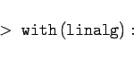 | (20.69) |
stehen alle 100 Befehle und Operationen dieses Pakets für die Anwendung zur Verfügung. Wichtig ist, daß bei Nutzung dieses Pakets Matrizen und Vektoren mit den speziellen Anweisungen und 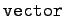 erzeugt werden sollten und nicht mit den allgemeineren Strukturen 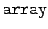.
Mit 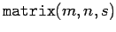 wird eine m x n-Matrix erzeugt. Fehlt s, so sind die Elemente dieser Matrix nicht spezifiziert, können jedoch nachträglich durch Zuweisungen der Art 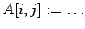 festgelegt werden. Ist s eine Funktion f=f(i,j) der Indizes, so erzeugt Maple die Matrix mit diesen Elementen. Schließlich kann s eine Liste mit Listen der Elemente bzw. Vektoren sein. Die Definition von Vektoren erfolgt analog mit 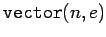. Ein Vektor ist eine 1 x n-Matrix, wird jedoch als Spaltenvektor interpretiert.
Die folgende Tabelle gibt einen Überblick über einige wesentliche Operationen mit Matrizen und Vektoren.
| 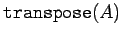 | bestimmt die zu A transponierte Matrix |
| 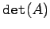 | bestimmt die Determinante der quadratischen Matrix A |
| 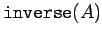 | bestimmt die zur quadratischen Matrix A inverse Matrix |
| 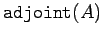 | bestimmt die zur quadratischen Matrix A adjungierte Matrix, d.h. 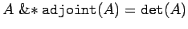. |
| 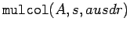 | multipliziert die s-Spalte der Matrix A mit ausdr |
| 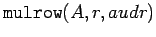 | multipliziert die r-te Zeile mit ausdr |
Für die Addition von Vektoren und Matrizen steht der Befehl 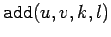 zur Verfügung. Er addiert die jeweils mit k und l skalar multiplizierten Matrizen oder Vektoren u und v. Die optionalen Argumente k und l können fehlen. Die Addition funktioniert nur, wenn die entsprechenden Matrizen arithmetisch verknüpfbar sind.
Die Matrizenmultiplikation wird mit 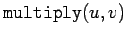 ausgeführt oder mit der Kurzform 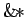 als Infix-Operator.